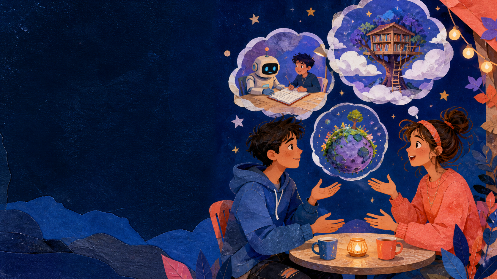

Open a door to an unreal idea. Learn to talk about dreams, wishes, and hypothetical situations.
What would you do? →
Check-in · choose a possibility
If today had one magic rule…
02 NOW
Pick a rule. Then finish: “If I could ___ today, I would ___.” Fictional answers are perfect.
Choose a card. Then share a real or imaginary answer.
Warm-up · picture talk
Which door would you open?
03 LOOK
Pick one doorway. Say why it is tempting.
Use ideas, not perfect grammar. The pattern will appear soon.
Lesson route · four steps
Your imagination has a grammar engine.
04 AIMS
1Dream words
2Build if + would
3Read a dream
4Create a world
By the end, you can…
describe unreal situations, make wishes and suggestions, and build accurate second conditional sentences.
Final mission
co-design a fictional “better world” using at least three If…, would… sentences.
Vocabulary · flip to discover
Collect the dream ingredients.
05 WORDS
Tap each card: first predict the meaning, then reveal its classroom-friendly definition.
Cards opened: 0 / 4. Say one example after each reveal.
Vocabulary practice · choose pairs
Which dream action fits?
06 MATCH
Tap the best ending for each situation.
1. You have a map of Mars. You would…
2. Your school has one difficult problem. You would…
3. You have a strange new idea. You would…
Correct choices: 0 / 3
Grammar discovery · notice the pattern
A dream has two sides.
07 SPOT
If side
If I had a time machine…
If our town were underwater…
If she knew the answer…
Result side
…I would visit the future.
…we would travel by boat.
…she would tell us.
IF + past simple, … WOULD + base verb
What word begins every result? Tap it:
Meaning · classify the situation
Is it possible now?
08 MEAN
Second conditional = an imaginary, unlikely, or impossible situation now or in the future.
Reality now
I do not have a private island.
→
Dream result
If I had an island, I would build a library there.
Tap a sentence. Decide: real possibility or dream world?
Form · sentence machine
Put the dream in order.
09 BUILD
Tap the tiles in the order that makes a complete sentence.
Your sentence appears here.
Goal: If I had more time, I would learn the piano.
Form · open the tabs
Make it negative or curious.
10 FORM
If I had wings, I would fly.
Use would + base verb.
If I had wings, I wouldn’t fly alone.
Use wouldn’t + base verb.
What would you do if you had wings?
Use What would + subject + base verb…?
Grammar spotlight · a useful exception
Why do we say “If I were”?
11 WERE
Useful form
If I were you, I would ask for help.
If she were here, she would know.
Why?
In careful English, use were for all subjects in imaginary if-sentences. You may also hear was in everyday speech.
Tap every sentence that has the useful imaginary form.
Controlled practice · repair the machine
One word is in the wrong universe.
12 FIX
Tap the sentence that needs a repair. Say the corrected version.
Remember: after IF, use a past form—not would.
Controlled practice · make the dream accurate
Choose the best engine part.
13 CHOOSE
1. If Mira ___ a superpower, she would help animals.
2. What would you ___ if school started at noon?
3. If we lived nearby, we ___ meet more often.
Correct answers: 0 / 3
Pronunciation · sound natural
Let the words link together.
14 SAY
Say the chunks, then tap them. Make the middle sound quick and smooth: would you → /wʊdʒə/.
Tap, echo, then say it once faster without losing the words.
Reading · prediction
A school has one impossible idea.
15 GUESS
Choose two predictions. Then read the proposal on the next scene.
Reading · a fictional proposal
Could a machine grant one wish?
16 READ
The Wish Machine Proposal
Our student team wants to invent a Wish Machine for the school. If we had this machine, every class would choose one small change each week. If students needed a quiet place, the machine would create a calm study room. If someone felt lonely, it would introduce them to a new club.
But the team knows one wish could cause trouble. If everybody asked for no homework, teachers would have a problem! “We would choose wishes that help many people,” says Noor.
Tap the highlighted parts. Which half is the IF side? Which half is the result?

What would your group wish for?
Highlights opened: 0 / 7
Reading · find evidence
Which detail unlocks the dream?
17 DETAIL
1. How often would each class choose a change?
2. What would the machine create for students needing quiet?
3. What wish could cause trouble?
Correct answers: 0 / 3
Language noticing · choose purpose
One form, two useful jobs.
18 NOTICE
Dream / hypothetical
If our school had a garden, we would grow food.
Advice
If I were you, I would talk to the teacher.
Tap a sentence and say its job.
Pair speaking · ask, answer, follow up
Interview a world designer.
19 PAIR
Ask one question. Add one follow-up.
Choose a question, answer as yourself or a fictional character, then ask “Why?”
Information gap · discover the secret plan
Same problem. Different solution.
20 GAP
Student A and Student B each have a secret dream solution. Ask questions before revealing.
Card A · Tired town
If the town had more energy, it would _____ at night.
It would turn streetlights into soft solar lanterns.
Card B · Lonely school
If the school were friendlier, it would _____ every Friday.
It would host a surprise club mixer.
Ask: “What would it do if…?” Do not read your partner’s card first.
Production · group world design
Build a world that could be better.
21 CREATE
In groups, choose one challenge. Invent three changes. Every change needs an If…, would… sentence.
03:00
Choose a world card. Draft three ideas, then present your best one.
Review game · five quick sparks
Can you power the dream engine?
22 QUIZ
Score: 0 / 5
If I ___ a million dollars, I would share it.
Pick the piece that makes the second conditional work.
Homework · write or speak
Send a letter from an imaginary world.
23 HOME
Required
Write 90–120 words: “If I could redesign one thing…” Use at least five second conditional sentences and underline every if and would.
Optional challenge
Record a 45-second “dream pitch” or draw a three-panel comic. Include one piece of advice: If I were you, I would…
Checklist: IF + past form · WOULD + base verb · clear dream · one helpful detail.
Wrap-up · final reflection
What would you take with you?
24 EXIT
Choose one card from each group, then say your final sentence.
Collect one Learn, one Need, and one Sentence card. 0 / 3
Next lesson: Money — Can Money Buy Happiness?Dream Lab · Lesson 12